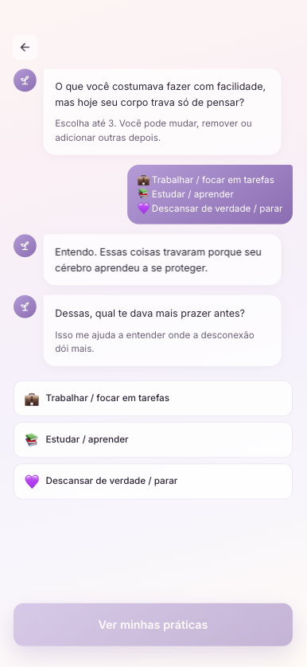
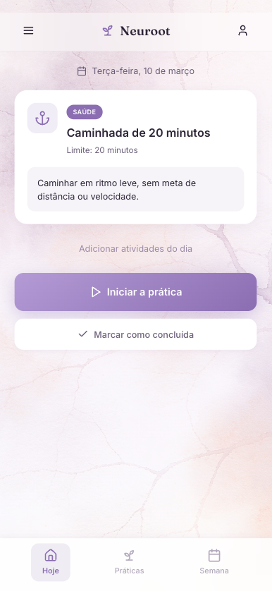
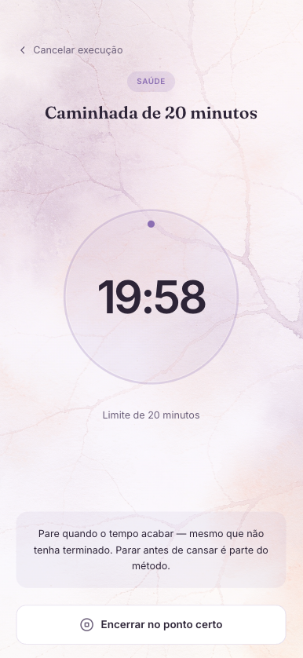
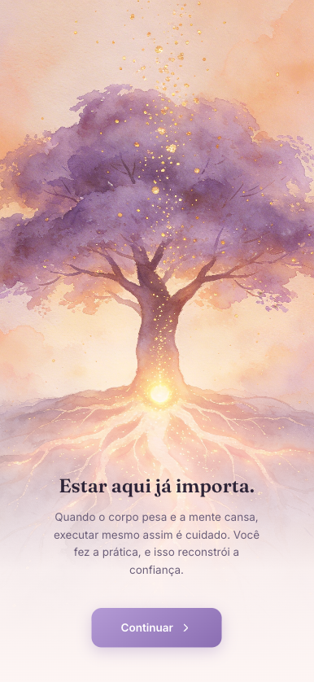
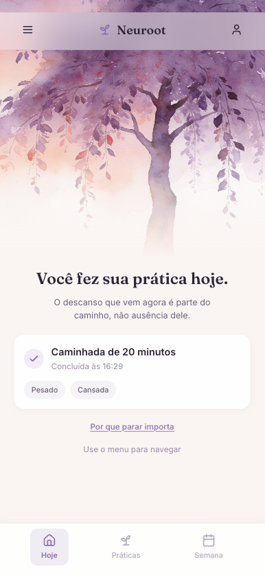
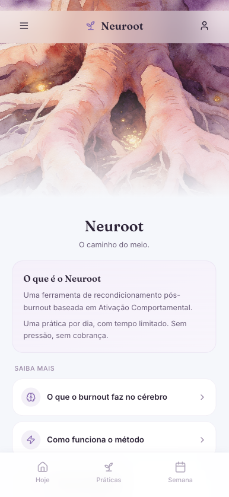

Neuroot
O caminho do meio.
A post-burnout recovery app built with UX + AI methodology.
O caminho do meio.
Um app de recuperação pós-burnout construído com metodologia UX + IA.
"Not about doing more. About reconnecting with effort without getting hurt." "Não sobre fazer mais. Sobre reconectar com o esforço sem se machucar."— Core product promise — Promessa central do produto
This started with
my own burnout.
Tudo começou com
meu próprio burnout.
In 2021, I hit burnout. I kept working — I couldn't stop — but something in my system had broken. I understood what needed to be done. I wanted to do it. And my body just wouldn't move.
Em 2021, eu tive burnout. Continuei trabalhando — não conseguia parar — mas algo no meu sistema tinha quebrado. Eu entendia o que precisava ser feito. Queria fazer. E meu corpo simplesmente não se movia.
I tried every productivity app I knew. Notion, Todoist, habit trackers. They made it worse. Every unchecked box felt like proof that I was failing. Every streak I broke felt like confirmation of a story I was already telling myself: that I couldn't sustain anything anymore.
Tentei todos os apps de produtividade que conhecia. Notion, Todoist, trackers de hábitos. Eles pioraram tudo. Cada caixa desmarcada parecia prova de que eu estava falhando. Cada sequência que eu quebrava parecia confirmar uma história que eu já contava a mim mesma: que eu não conseguia sustentar mais nada.
Years later, I started using a Notion AI template to create small daily anchors for myself. It helped — but it was static, had no real intelligence, and couldn't adapt to how I was actually feeling. That gap became Neuroot.
Anos depois, comecei a usar um template de IA no Notion para criar pequenas âncoras diárias. Ajudou — mas era estático, sem inteligência real, e não se adaptava ao que eu realmente sentia. Essa lacuna se tornou o Neuroot.
"Uma âncora te impede de mover. Uma raiz te sustenta enquanto você cresce."
The name evolved from Reanchor — a metaphor of passive stability — to Neuroot, a metaphor of active growth. Roots don't hold you still. They sustain you while you expand. That's the exact image of neuroplasticity: the nervous system rebuilding safe pathways through conscious repetition.
O nome evoluiu de Reanchor — uma metáfora de estabilidade passiva — para Neuroot, uma metáfora de crescimento ativo. Raízes não te prendem. Elas te sustentam enquanto você se expande. Essa é a imagem exata da neuroplasticidade: o sistema nervoso reconstruindo caminhos seguros através da repetição consciente.
Productivity apps were designed
for people whose brains still work.
Apps de produtividade foram projetados
para pessoas cujos cérebros ainda funcionam.
Burnout doesn't just cause tiredness. It causes neurological damage. Chronic stress elevates cortisol, which suppresses dopamine production in the mesolimbic system — the brain's reward circuit. The hippocampus loses the ability to distinguish real threats from false alarms. The amygdala becomes hyperactive.
Burnout não causa apenas cansaço. Causa dano neurológico. O estresse crônico eleva o cortisol, que suprime a produção de dopamina no sistema mesolímbico — o circuito de recompensa do cérebro. O hipocampo perde a capacidade de distinguir ameaças reais de alarmes falsos. A amígdala fica hiperativa.
The result: a person who knows exactly what they need to do, wants to do it, and whose nervous system treats every task as a survival threat.
O resultado: uma pessoa que sabe exatamente o que precisa fazer, quer fazer, e cujo sistema nervoso trata cada tarefa como uma ameaça à sobrevivência.
| What existing apps doO que os apps atuais fazem | What a recovering brain needsO que um cérebro em recuperação precisa |
|---|---|
| Show backlogs of undone tasksMostram backlogs de tarefas não feitas | One small action. No debt.Uma pequena ação. Sem dívida. |
| Punish broken streaksPunem sequências quebradas | No punishment for absenceSem punição por ausência |
| Measure volume, not safetyMedem volume, não segurança | Safety of effort, not outputSegurança do esforço, não resultado |
| Send pressure-based notificationsEnviam notificações baseadas em pressão | Return to effort as a choiceRetorno ao esforço como escolha |
Three people.
One nervous system pattern.
Três pessoas.
Um padrão de sistema nervoso.
Laid off or burned out. Functionally paralyzed. Knows exactly what they should do. Their body refuses to start. Used to achieving — now afraid of effort itself. Demitido ou em burnout. Funcionalmente paralisado. Sabe exatamente o que deveria fazer. O corpo se recusa a começar. Acostumado a conquistar — agora com medo do próprio esforço.
Still working, operating at 20% capacity. Looks fine from the outside. Inside, everything takes 10x the energy it should. Afraid to admit it. Ainda trabalhando, operando a 20% da capacidade. Parece bem por fora. Por dentro, tudo exige 10x mais energia do que deveria. Com medo de admitir.
Medically dismissed, afraid of relapsing. Ready to try again — carefully. Needs a structure that won't punish them for going slowly. Afastado medicamente, com medo de recaída. Pronto para tentar de novo — com cuidado. Precisa de uma estrutura que não o puna por ir devagar.
Behavioral Activation —
not productivity.
Ativação Comportamental —
não produtividade.
Neuroot is built on Behavioral Activation, a clinically validated approach from cognitive behavioral therapy. The core principle: repeated experiences of effort followed by reward — even small ones — rebuild the neural pathways that burnout damaged.
Neuroot é construído sobre Ativação Comportamental, uma abordagem clinicamente validada da terapia cognitivo-comportamental. O princípio central: experiências repetidas de esforço seguidas de recompensa — mesmo pequenas — reconstroem os caminhos neurais que o burnout danificou.
This is not gamification. It's not a habit tracker. It's a tool that teaches the nervous system that acting won't destroy you again.
Isso não é gamificação. Não é um tracker de hábitos. É uma ferramenta que ensina o sistema nervoso que agir não vai destruir você de novo.
The dual philosophical base: neuroplasticity (the brain rebuilds safe pathways through repetition) meets Kung Fu philosophy (the middle path — neither excess nor deprivation). Both systems arrived at the same truth: conscious repetition transforms who you are. This philosophy is implicit in the product — users feel it without reading it.
A dupla base filosófica: neuroplasticidade (o cérebro reconstrói caminhos seguros pela repetição) encontra a filosofia Kung Fu (o caminho do meio — nem excesso nem privação). Ambos os sistemas chegaram à mesma verdade: a repetição consciente transforma quem você é. Essa filosofia é implícita no produto — os usuários a sentem sem ler.
"Teach the nervous system that effort is safe. One practice. One day. Stop before you're tired. That's the whole method." "Ensine o sistema nervoso que o esforço é seguro. Uma prática. Um dia. Pare antes de cansar. Esse é o método inteiro."
Design Thinking → Shape Up
→ PRD → AI executes.IA executa.
This project was built following the methodology I use for every complex product: human exploration first, then decisive shaping, then AI-assisted execution. Each phase gates the next.
Este projeto foi construído seguindo a metodologia que uso para todo produto complexo: exploração humana primeiro, depois shaping decisivo, depois execução assistida por IA. Cada fase habilita a próxima.
Discovery & PRD — I started with the Notion template I was already using for myself. That template became the first prototype — its limitations became the brief. I documented the problem, user profiles, scientific foundation, no-gos, rabbit holes, and success indicators using the Shape Up methodology.
Discovery & PRD — Comecei com o template de Notion que já usava para mim mesma. Esse template se tornou o primeiro protótipo — suas limitações se tornaram o briefing. Documentei o problema, perfis de usuário, base científica, no-gos, rabbit holes e indicadores de sucesso usando a metodologia Shape Up.
Design with Figma Make — I used Figma Make to prototype all screens at high fidelity. The visual language emerged from the methodology: no aggressive colors, no red alerts, no urgency. A watercolor tree as the core illustration — rooted, alive, growing slowly.
Design com Figma Make — Usei o Figma Make para prototipar todas as telas em alta fidelidade. A linguagem visual emergiu da metodologia: sem cores agressivas, sem alertas vermelhos, sem urgência. Uma árvore em aquarela como ilustração central — enraizada, viva, crescendo devagar.
Development with Claude Code — I built the full app using Claude Code — writing prompts, reviewing code, iterating on behavior — without a technical co-founder. Stack: React + TypeScript, Supabase for auth and database, GitHub for version control, Vercel for deployment.
Desenvolvimento com Claude Code — Construí o app completo usando Claude Code — escrevendo prompts, revisando código, iterando no comportamento — sem cofundador técnico. Stack: React + TypeScript, Supabase para auth e banco de dados, GitHub para controle de versão, Vercel para deploy.
AI in the onboarding — The Claude API powers a conversational onboarding. Instead of a form, the app opens with a question: "What did you used to do with ease, but now your body freezes just thinking about?" The AI generates personalized practices from the user's answers — already named, timed, and written in the product's voice.
IA no onboarding — A API do Claude alimenta um onboarding conversacional. Em vez de um formulário, o app abre com uma pergunta: "O que você costumava fazer com facilidade, mas agora seu corpo congela só de pensar?" A IA gera práticas personalizadas a partir das respostas — já nomeadas, cronometradas e escritas na voz do produto.
Every word is a
product decision.
Cada palavra é uma
decisão de produto.
Microcopy is product strategy here. The language is the therapy. Microcopy é estratégia de produto aqui. A linguagem é a terapia.

No forms. No signup before understanding what the product does. The AI asks one question at a time, responds with brief empathetic context, and generates 3 personalized practices. Sem formulários. Sem cadastro antes de entender o que o produto faz. A IA faz uma pergunta de cada vez, responde com breve contexto empático e gera 3 práticas personalizadas.

"There's no practice defined for today." — Not "You haven't done anything yet." The language removes debt. One CTA: "Choose today's practice" — an invitation, never a task. "Não tem prática definida para hoje." — Não "Você ainda não fez nada." A linguagem remove a dívida. Um CTA: "Escolher a prática de hoje" — um convite, nunca uma tarefa.

Full-screen timer. Limit visible. At the bottom: "Stop when the time ends — even if you haven't finished. Stopping before exhaustion is part of the method." Timer em tela cheia. Limite visível. Na parte de baixo: "Pare quando o tempo acabar — mesmo que não tenha terminado. Parar antes da exaustão faz parte do método."

Three axes: Body (Light / Neutral / Heavy), Mind (Clear / Neutral / Tired), Resistance (Less / Same / More). No scores. No percentages. Just observation. Três eixos: Corpo (Leve / Neutro / Pesado), Mente (Clara / Neutra / Cansada), Resistência (Menor / Igual / Maior). Sem notas. Sem porcentagens. Apenas observação.

"Você fez sua prática hoje." Then: "Executing beyond the plan doesn't accelerate — it only teaches the body that limits don't exist." "Você fez sua prática hoje." Depois: "Executar além do plano não acelera — apenas ensina o corpo que limites não existem."

Explains what burnout does to the brain, how the behavioral activation method works, and the phases of recovery. Transparency about the science builds trust before any practice begins. Explica o que o burnout faz no cérebro, como o método de ativação comportamental funciona e as fases da recuperação. Transparência sobre a ciência constrói confiança antes de qualquer prática começar.
What building this
taught me.
O que construir isso
me ensinou.
Measuring recovery,
not performance.
Medindo recuperação,
não performance.
Traditional product metrics would destroy this product. DAU penalizes absence. Session length rewards overuse. Retention curves treat a 3-day gap as churn. But in Neuroot, a user who pauses for 3 days and returns safely is exactly the behavior we want to see.
Métricas tradicionais de produto destruiriam este produto. DAU penaliza ausência. Tempo de sessão recompensa uso excessivo. Curvas de retenção tratam uma pausa de 3 dias como churn. Mas no Neuroot, um usuário que pausa por 3 dias e retorna com segurança é exatamente o comportamento que queremos ver.
Every metric here was designed from the methodology outward — not from a dashboard template inward. If a metric contradicts the therapeutic logic, it doesn't belong in the product.
Cada métrica aqui foi desenhada a partir da metodologia — não a partir de um template de dashboard. Se uma métrica contradiz a lógica terapêutica, ela não pertence ao produto.
"The question isn't 'are users coming back every day?' — it's 'when they come back, are they safer than before?'" "A pergunta não é 'os usuários estão voltando todo dia?' — é 'quando voltam, estão mais seguros do que antes?'"
Google's HEART framework — rewritten for a product where success means the user eventually doesn't need you anymore. O framework HEART do Google — reescrito para um produto onde sucesso significa que o usuário eventualmente não precisa mais de você.
% of users who return after 2+ day gaps. In traditional products, this would be "reactivation." Here, it's the primary success signal — the user paused, listened to their body, and came back without guilt. % de usuários que retornam após pausas de 2+ dias. Em produtos tradicionais, seria "reativação." Aqui, é o principal sinal de sucesso — o usuário pausou, ouviu o corpo e voltou sem culpa.
Are the 3 axes (Body, Mind, Resistance) trending toward lighter / clearer / less resistance over weeks? This is the direct signal that the nervous system is recalibrating — the core product promise. Os 3 eixos (Corpo, Mente, Resistência) estão tendendo para mais leve / mais claro / menos resistência ao longo das semanas? É o sinal direto de que o sistema nervoso está se recalibrando — a promessa central do produto.
% of users who complete the AI conversation and generate their first practices. A drop here means the conversational UX isn't building enough trust, or the questions feel too invasive for a vulnerable user. % de usuários que completam a conversa com IA e geram suas primeiras práticas. Queda aqui significa que a UX conversacional não está construindo confiança suficiente, ou as perguntas parecem invasivas demais para um usuário vulnerável.
% who complete the timer vs. early exit. But here, both outcomes are valid — stopping early might be the right decision. The real signal is: did the user feel safe enough to start at all? % que completam o timer vs. saída antecipada. Mas aqui, ambos os resultados são válidos — parar antes pode ser a decisão certa. O sinal real é: o usuário se sentiu seguro o suficiente para começar?
The natural rhythm each user develops — not forced daily. Some users will practice 5x/week, others 2x. The metric tracks whether their personal rhythm is stabilizing, not whether it matches a target we set. O ritmo natural que cada usuário desenvolve — não forçado diariamente. Alguns vão praticar 5x/semana, outros 2x. A métrica acompanha se o ritmo pessoal está estabilizando, não se corresponde a uma meta que nós definimos.
Users who naturally progress from Day view → 3-day → Week view, and eventually stop needing the app. In most products, this is churn. In Neuroot, this is the ultimate success metric — the user is recovered. Usuários que progridem naturalmente da visão Dia → 3 dias → Semana, e eventualmente param de precisar do app. Na maioria dos produtos, isso é churn. No Neuroot, é a métrica definitiva de sucesso — o usuário se recuperou.
Tools chosen for
what they don't collect.
Ferramentas escolhidas pelo
que elas não coletam.
The analytics stack was selected with one constraint above all: this is mental health data. Every tool must be privacy-first, LGPD-compliant, and respectful of the user's vulnerability. No third-party data sharing. No behavioral profiling. No retargeting.
A stack de analytics foi selecionada com uma restrição acima de todas: estes são dados de saúde mental. Toda ferramenta precisa ser privacy-first, aderente à LGPD e respeitosa com a vulnerabilidade do usuário. Sem compartilhamento com terceiros. Sem profiling comportamental. Sem retargeting.
Open-source, self-hostable product analytics. Event tracking for all 6 core metrics. Funnels for onboarding flow. Cohort analysis by user profile type. No data leaves the infrastructure. Analytics de produto open-source e auto-hospedável. Rastreamento de eventos para as 6 métricas centrais. Funis para fluxo de onboarding. Análise de coorte por perfil de usuário. Nenhum dado sai da infraestrutura.
Session recordings and heatmaps to understand where users hesitate, abandon, or get confused — especially in the AI onboarding conversation. Sensitive screens excluded from recording. Gravações de sessão e heatmaps para entender onde os usuários hesitam, abandonam ou se confundem — especialmente na conversa de onboarding com IA. Telas sensíveis excluídas da gravação.
Lightweight custom events logged directly to Supabase — already in the stack. Tracks self-assessment submissions, timer starts/completions, practice selections, and return-after-gap events. Feeds into a private Metabase dashboard. Eventos customizados leves logados diretamente no Supabase — já na stack. Rastreia submissões de auto-avaliação, inícios/conclusões do timer, seleções de prática e eventos de retorno-após-pausa. Alimenta um dashboard privado no Metabase.
What comes
next.
O que vem
a seguir.
"Conceiving the product from scratch — PRD, design, code and deploy — using AI as an execution partner, not a shortcut. Every design decision was born from my own experience with burnout." "Conceber o produto do zero — PRD, design, código e deploy — usando IA como parceira de execução, não como atalho. Cada decisão de design nasceu da própria experiência com burnout."
through complex products? Interessado em como eu penso
produtos complexos?